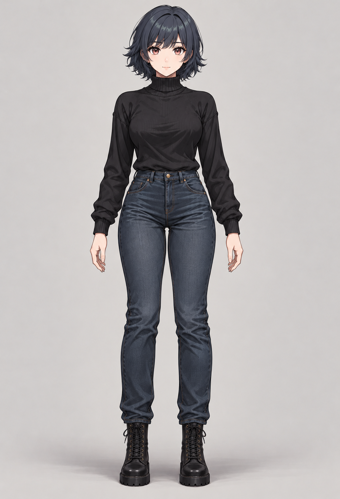
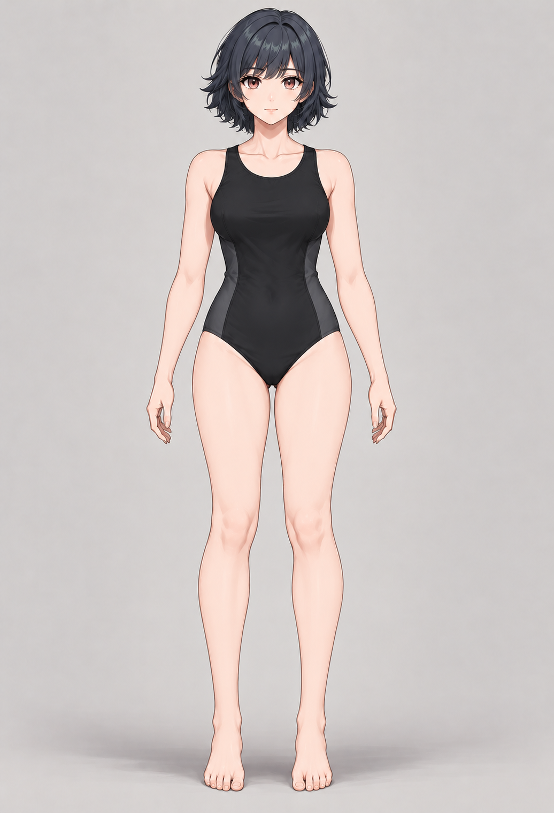
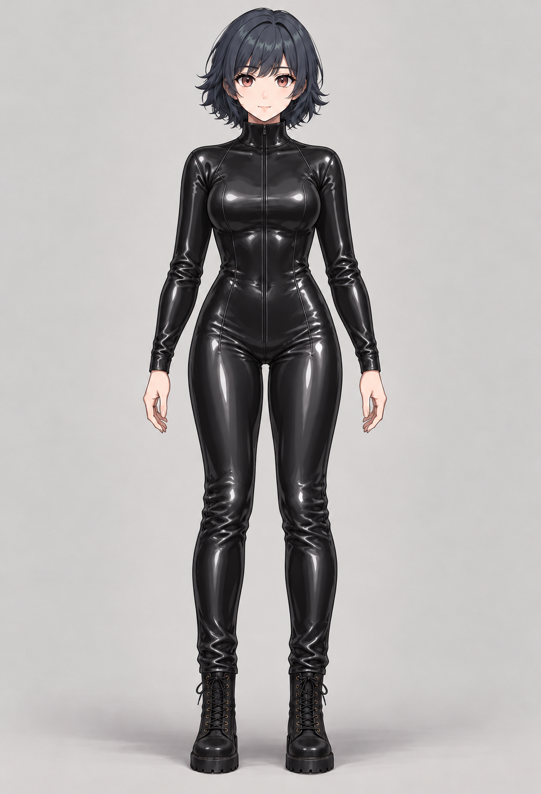
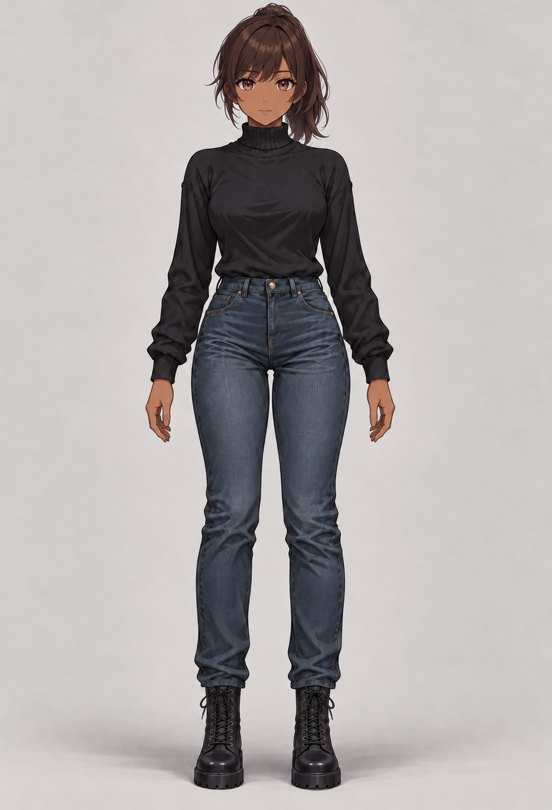

01 / NEUTRAL DESIGN
Streetwear
A level head, relaxed front-facing stance, simple turtleneck, jeans, and boots. Hair and skin are default appearance choices.
Open full-size streetwear study ↗

Option 1, revised into a neutral front-facing 20-year-old character. No glasses or jewellery. Compare the same character across three outfits and an appearance variation.
A level head, relaxed front-facing stance, simple turtleneck, jeans, and boots. Hair and skin are default appearance choices.
Open full-size streetwear study ↗
A matte one-piece swimsuit, with the same face, hairstyle, proportions, and neutral standing pose.
Open full-size swimsuit study ↗
Glossy black latex, a closed collar, full sleeves and legs. Broad highlights distinguish the material from knitwear and denim.
Open full-size catsuit study ↗
A warm brown skin tone and chestnut ponytail, keeping the streetwear and facial structure consistent.
Open full-size appearance study ↗